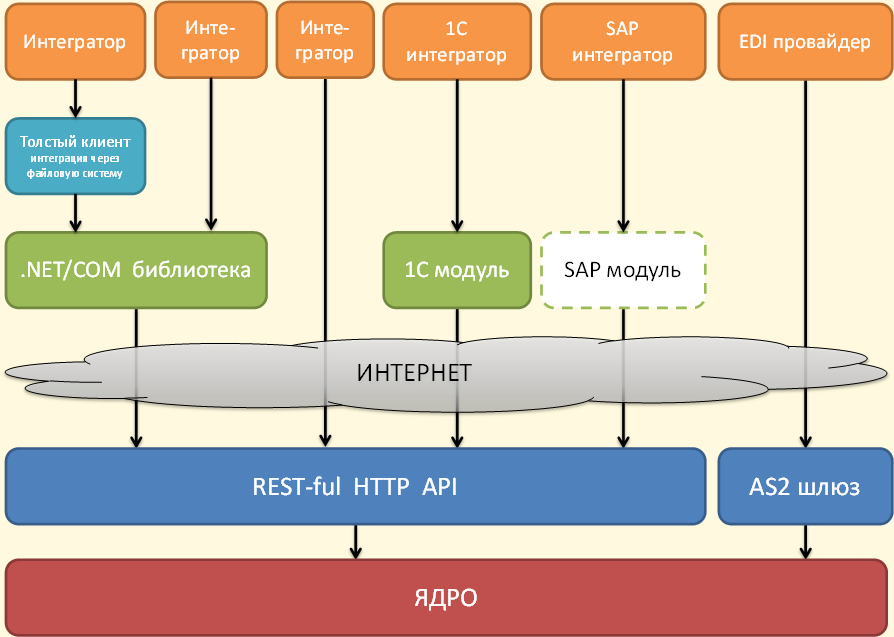

Возможности для интеграции¶
На схеме ниже представлен весь спектр возможностей для интеграции с Диадоком:

В зависимости от решаемых прикладных задач, а также в зависимости от требований к клиентской части и доступных средств разработки интегратор может выбрать наиболее подходящий ему уровень взаимодействия с API Диадока.
Базовым уровнем интеграции с Диадоком является его HTTP-based API. Этот уровень являетсся наиболее общим, и на нем, в частности, обеспечивается платформо-независимость для интеграционных решений. Это значит, что с HTTP API могут работать как клиенты, написанные на языке C# под платформу .NET и запускающиеся на машинах с ОС Microsoft Windows, так и клиенты, написанные на Java или C++, запускающиеся на машинах под управлением ОС Linux.
Для интеграторов, ведущих разработку в стеке технологий Microsoft, доступна клиентская .NET/COM-библиотека DiadocApiDll, которая берет на себя работу по преобразованию локальных обращений к свойствам и методам некоторых объектов в соответствующие HTTP-команды API Диадока.
Кроме того, DiadocApi.dll инкапсулирует детали работы с криптографией, так что прикладному разработчику не нужно разбираться с тонкостями обращений к CryptoAPI. Актуальная версия библиотеки DiadocApi.dll вместе с исходниками входит в состав SDK, который доступен для скачиания по ссылке.
На базе библиотеки DiadocApi.dll разработан “толстый клиент” Диадока, который позволяет реализовать интеграцию с Диадоком, используя обмен данными через файловую систему на клиентском рабочем месте.
В общих чертах схема работы толстого клиента выглядит следующим образом.
Клиент настраивается на мониторинг заданного ящика в Диадоке, и все появляющиеся в нем сообщения сохраняет в виде файлов в заданную локальную папку на рабочем месте пользователя. И обратно, толстый клиент мониторит некоторую другую локальную папку, и все файлы, которые в ней появляются, отправляет по определенным правилам в ящики контрагентов через Диадок. Данный толстый клиент работает только под Windows и требует установки Microsoft .NET Framework на рабочие места пользователей.
Для разработчиков, занимающихся интеграцией Диадока с различными программными продкутами, построенными на платформе 1С, доступен специальный внешний компонент, который позволяет максимально быстро решать типовые задачи, возникающие при стыковке 1С-решений с Диадоком. Этот компонент написан на языке C++ и не содержит лишних зависимостей, что позволяет использовать его на любой Windows-системе, не требуя установки каких-либо дополнительных модулей.
Кроме того, для EDI-провайдеров и организаций, имеющих системы, поддерживающие работу по AS2-протоколу, Диадок предоставляет возможность интеграции через AS2-шлюз. AS2-шлюз позволяет, например, конвертировать EDI-сообщения типа INVOIC в Диадок-сообщения, содержащие XML счета-фактуры, передаваемые в соответствие с порядком Минфина.
Наконец, программная реализация API Диадока доступна для следующих языков (входит в состав SDK): Java и C++, а из языков Visual Basic for Applications и JavaScript возможна работа с Диадоком посредством COM-сервисов (примеры также доступны в составе SDK).